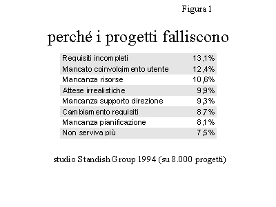
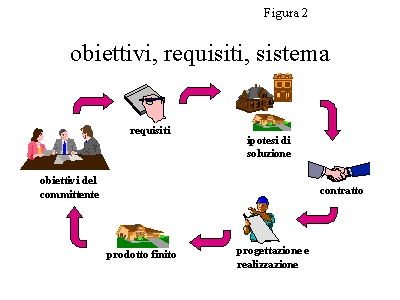
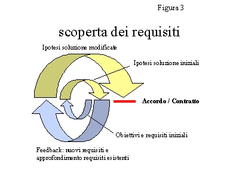
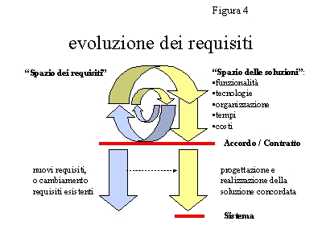

analisi-disegno.com
I requisiti: l'anello debole dello sviluppo software
di Adriano Comai. (Pubblicato su ZeroUno, luglio 1999)
La gestione dei requisiti applicativi è troppo spesso inadeguata per un'effettiva comprensione delle esigenze del business. E i risultati, purtroppo, si vedono.
"L'analisi dei requisiti? Ma certo che l'abbiamo fatta, ci mancherebbe…", risponderebbe chiunque di noi sia impegnato in un progetto, a chi gli ponesse una domanda così scontata.
Risponderebbe in tribunale, se è sfortunato. Tom De Marco e Tim Lister (su Cutter IT Journal, aprile 1998) documentano una crescita esponenziale delle cause legali tra clienti e fornitori di sistemi software, incentrate il più delle volte sulla poca chiarezza dei requisiti specificati a livello contrattuale, e sulle possibilità di una loro interpretazione divergente da parte delle diverse parti in causa.
Un celebre studio effettuato dallo Standish Group, nel 1994, su un campione di 8000 progetti, riporta risultati sconfortanti: 16% di successi, 53% di fallimenti parziali (gravi problemi sulle funzionalità, sui costi e/o sui tempi), 31% di fallimenti completi (progetto cancellato). A parte la crudezza dei dati, è interessante l'indagine sulle cause dei fallimenti (figura 1). Tra i primi otto fattori, cinque sono relativi a problemi sui requisiti, tre a problemi manageriali, nessuno a problemi tecnici.
Requisiti incompleti, mancato coinvolgimento degli utenti, attese irrealistiche, cambiamento dei requisiti in corso d'opera, progetto cancellato perché non più utile: ad essere investito è l'intero ambito dei rapporti tra i progettisti di sistemi ed i loro clienti. Ed è il motivo per cui il prestigioso mensile "Scientific American" gridava in copertina, pochi anni orsono, la "Software Crisis". Registriamo continui miglioramenti di rapporto costi-prestazioni nel campo dell'hardware, ma il mondo del software non ce la fa a tenere il passo, e a fornire soluzioni accettabili in termini di contenuti funzionali, di livello di affidabilità e prestazioni, di rispetto delle date di consegna e dei costi da sostenere per lo sviluppo. L'elemento critico, più ancora che lo sviluppo di nuove applicazioni, è la cosiddetta manutenzione evolutiva. Le esigenze del business cambiano (e crescono) con un ritmo troppo accelerato, in questi periodi di concorrenza e continua innovazione, perché si riesca a far evolvere i sistemi "legacy" esistenti in tempo utile per supportare i nuovi prodotti o i nuovi servizi: con il risultato che l'informatica viene vista come una palla al piede, piuttosto che un'opportunità, e con un crescente grado di incomprensioni e risentimenti tra "utenza" aziendale e progettisti.
I requisiti vanno gestiti
Tra i cambiamenti che stanno trasformando il mondo IT, uno tra i più significativi riguarda la "gestione dei requisiti". L'espressione è molto recente, in quanto di "requirements management" e "requirements engineering" si è iniziato a parlare solo nell'ultimo decennio.
La gestione dei requisiti è considerata la "key process area" prioritaria per il miglioramento dello sviluppo software nel Capability Maturity Model del Software Engineering Institute, un organismo sponsorizzato dal Dipartimento della Difesa e da molte tra le maggiori aziende statunitensi. Ed è al centro delle pratiche raccomandate dallo standard ISO 9001, e dalle linee guida ISO 9000-3 (cfr. ZeroUno n. 193, febbraio 1998).
Ma cosa si intende esattamente con gestione dei requisiti? Anzi, precisamente, cos'è un requisito? E' una caratteristica del sistema, richiesta al progettista dal committente (o da un altro interlocutore interessato), come necessaria per raggiungere i propri obiettivi.
Formulando i requisiti, il committente esprime una serie di vincoli, chiarificando il modo in cui gli obiettivi dovranno essere soddisfatti dal sistema. A sua volta il progettista, dopo aver analizzato i requisiti ricevuti, può formulare una o più ipotesi di soluzione, tra loro diverse per caratteristiche, costi e tempi di realizzazione, ma comunque in grado di rispondere, in tutto o in parte, ai requisiti espressi. Tra le soluzioni proposte, il committente sceglierà quella migliore (dal suo punto di vista) in termini di rapporto tra costi e benefici, e stipulerà un accordo (o un contratto) con i progettisti affinché la realizzino.
Una volta realizzato il sistema, la conformità ai requisiti concordati costituirà il criterio per l'accettazione del prodotto da parte del committente (ed è qui che il più delle volte emergono i conflitti di interpretazione che incrinano i rapporti tra le parti in causa).
Si tratta di un schema procedurale ben noto, applicabile anche in altri contesti contrattuali (cfr. figura 2). Purtroppo, però, la sua applicazione nel campo del software è spesso problematica. Vediamo perché.
Come nascono i requisiti
In una situazione ideale, il committente comunica i requisiti alla partenza del progetto, e il compito dei progettisti è soltanto quello di acquisirli e di comprenderli. Nel mondo reale, invece, la scoperta dei requisiti è un'attività faticosa, e comporta una serie ripetuta di interazioni e discussioni tra gli attori coinvolti.
Il committente ha chiari i propri obiettivi di business, ma, ovviamente, non è quasi mai in grado di trasmettere ai progettisti un elenco di requisiti completo e dettagliato sino al punto da costituire un punto di partenza sufficiente per la progettazione del sistema. Il compito del progettista diventa quindi quello di aiutare il committente (e gli altri interlocutori interessati al sistema) a chiarire progressivamente tutti gli aspetti del problema, attraverso interviste, analisi degli scenari concreti di operatività, evidenziazione dei rischi, e soprattutto proposte preliminari di possibili soluzioni. L'obiettivo in questa fase è stimolare il committente, rendendolo consapevole delle diverse possibilità di soluzione, in modo da permettergli di prendere posizione chiarificando i requisiti espressi inizialmente, ed eventualmente aggiungendone altri. In pratica, permettergli di esprimere feedback (cfr. figura 3) sulle ipotesi prospettate dai progettisti.
Un fattore importante in questo contesto è la messa in luce dei conflitti tra requisiti. Il conflitto tra requisiti è sempre presente, salvo casi eccezionali. Lo è quando i requisiti vengono espressi da un unico committente, che desidererebbe un sistema il più completo ed efficiente possibile, rilasciato nel più breve tempo possibile, con i costi minori possibili. E naturalmente lo &aegrave; ancora di più quando i requisiti possono essere espressi da vari interlocutori (altre funzioni aziendali interessate, utilizzatori finali). Il compito del progettista in questo ambito è quello di portare allo scoperto il conflitto al più presto, permettendo al committente di prenderne coscienza e di decidere nel merito.
Quando nascono i requisiti
Nel mondo ideale, i requisiti vengono definiti nella fase iniziale del progetto, permettono di definire un accordo, dopodiché non vengono più cambiati (il famoso "congelamento delle specifiche").
È questa la situazione ipotizzata dal processo "a cascata" (waterfall), che è alla base della maggior parte delle metodologie di sviluppo ufficialmente adottate nei settori informatici delle aziende, ma raramente usate davvero.
Nel mondo reale, i requisiti possono nascere, o cambiare, anche dopo il raggiungimento dell'accordo (o la stipula del contratto) tra committenti e progettisti, mentre sono in corso le attività di realizzazione (cfr. figura 4). Innovazioni legislative, cambiamenti negli scenari di mercato o nelle strategie aziendali, nuove opportunità: sono diversi i fattori che possono determinare un cambiamento di requisiti, anche nei casi in cui l'indagine iniziale sia stata veramente esaustiva.
A fronte di un cambiamento di requisiti in corso d'opera, due sono le strade possibili. La prima, meno dolorosa ma non sempre praticabile, consiste nel rimandare la presa in carico del nuovo requisito a una release successiva. La seconda, nel rinegoziare i termini dell'accordo precedentemente raggiunto, rivedendone i contenuti e/o i costi e/o i tempi definiti.
Una cosa, comunque, è certa: i requisiti possono nascere o cambiare in ogni momento, dalle fasi iniziali di un progetto a quelle realizzative, e certamente dopo che il sistema è stato rilasciato. stato rilasciato. È quindi necessario che il presidio sull'evoluzione dei requisiti venga effettuato in modo continuativo, durante l'intero ciclo di vita del sistema.
Specifica e accordo sui requisiti
Come vanno specificati i requisiti, in modo da costituire la base per un accordo effettivo? Le pratiche correnti di gestione dei requisiti raccomandano, prima di tutto, di raccogliere e gestire i requisiti (le richieste) in un ambito distinto da quello delle proposte di soluzione avanzate dai progettisti. E per la gestione dei requisiti sono nati, negli ultimi anni, numerosi strumenti dedicati (requirements management tools), che verranno trattati in un prossimo articolo.
L'accordo vero e proprio dovrà essere raggiunto su una specifica soluzione, che risponda in modo adeguato ai requisiti espressi dal committente e dagli altri interlocutori interessati, e le cui caratteristiche siano comprensibili per tutte le parti in causa, senza ambiguità. In particolare, dovrà essere chiaro sia per il committente che per i progettisti quali siano i requisiti soddisfatti dalla soluzione concordata, e quali invece siano stati eliminati (a causa di conflitto) o rimandati a data da destinarsi (per contenere tempi e costi della soluzione concordata).
analisi-disegno.com , servizi e materiali per lo sviluppo dei sistemi software, a cura di Adriano Comai.